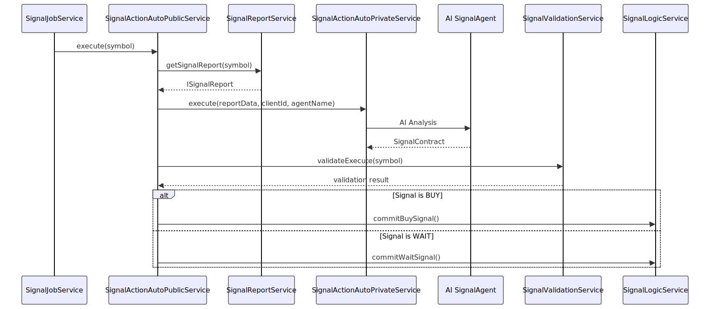

This document covers the automated signal generation, validation, and execution system that forms the core trading logic of the platform. The pipeline processes market data from multiple sources, applies AI-driven analysis, validates trading opportunities, and distributes actionable signals through various channels.
For information about the AI agents that provide market analysis, see AI Agent Swarm System. For details about external service integrations used by the pipeline, see External Service Integrations.
The signal processing pipeline is an automated system that continuously monitors cryptocurrency markets, generates trading signals using AI analysis, validates these signals against predefined rules, and distributes them to users through multiple channels. The pipeline operates on a scheduled basis and can process signals for multiple cryptocurrency symbols simultaneously.

The pipeline operates on several key data structures that define signal information and processing states:
| Interface | Purpose | Key Fields |
|---|---|---|
ISignalDto |
Signal data transfer object | symbol, buyPrice, sellPrice, quantity, stopLossPrice, possibilityPercent |
ISignalRow |
Persisted signal with ID | Extends ISignalDto with id field |
SignalContract |
AI agent communication | action, stopLoss, possibility, comment, info |
ISignalReport |
Aggregated market data | longRangeReport, swingRangeReport, shortRangeReport, mastodonNewsReport |
The signal generation process follows a structured workflow that combines market data analysis with AI-driven decision making:

The SignalValidationService implements sophisticated validation rules to determine when signals should be executed and when positions should be closed:
The validation process checks multiple criteria before allowing signal execution:
validateShouldExecute() functionCC_LADDER_FAIL_HOURS and CC_LADDER_GROWTH_HOURS
The system automatically identifies profitable positions ready for closure:
CC_LADDER_TRADE_REVENUE configuration for minimum profit requirementsThe pipeline supports three primary signal actions defined in the SignalAction enum:
| Action | Enum Value | Purpose | Generated By |
|---|---|---|---|
| Buy Signal | SignalAction.SignalBuy |
Recommends purchasing cryptocurrency | AI analysis of bullish indicators |
| Wait Signal | SignalAction.SignalWait |
Advises holding current positions | Mixed or bearish market conditions |
| Close Notification | N/A | Triggered when positions reach profit targets | Automated validation checks |
Buy signals are generated when the AI agent calls the SignalRecommendBuy tool with required parameters:
reason: Detailed analysis justifying the purchase recommendationstop_loss: Price level for loss mitigationpossibility: Probability percentage of price increase (1-100)Once signals are validated and processed, they are distributed through multiple channels to ensure users receive timely notifications:
The TelegramWebService formats and publishes signals to configured Telegram channels:
The WebhookService sends HTTP POST requests to external systems:
JwtService/api/v1/buy, /api/v1/wait, /api/v1/sellAll signals are persisted using the SignalDbService which extends the base CRUD functionality:
getActiveSignals()getChartSignals()The SignalJobService orchestrates the entire pipeline execution on a scheduled basis:

The service runs continuously with configurable intervals, processing multiple cryptocurrency symbols and handling both signal generation and position resolution in each cycle.